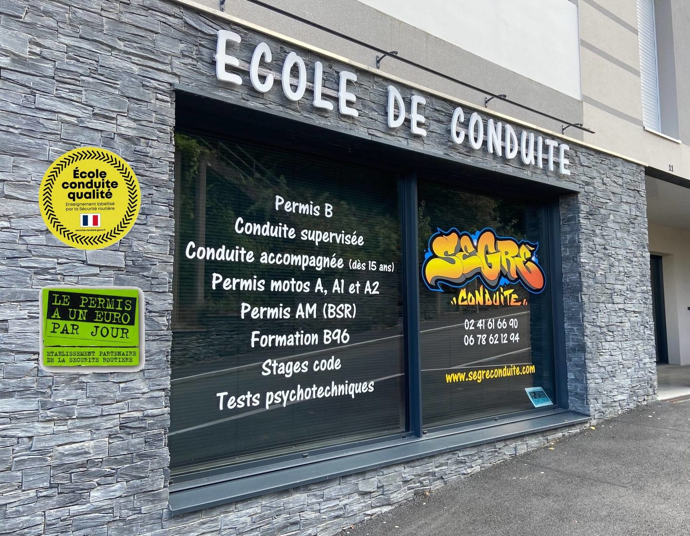

Segre Conduite
Vous cherchez une auto-école de confiance à Segré ? Ne cherchez plus ! L'Auto Ecole Segré Conduite, située au 11-13 rue Jules Ferry, est là pour vous accompagner dans votre apprentissage de la conduite.
Rencontrez notre équipe de professionnels passionnés et motivés pour démarrer votre apprentissage de la conduite à l'Auto Ecole Segré Conduite. Ne perdez plus de temps et lancez-vous sur la route de la réussite dès maintenant !
Accueil
Nous proposons des permanences d'accueil au bureau pour répondre à toutes vos questions et vous aider à choisir la formule qui vous convient le mieux.
| Permanences D'accueil |
|---|
| Lundi |
| 17h à 19h |
| Mercredi |
| 11h à 12h |
| & |
| 16h à 18h |
| Vendredi |
| 17h à 19h |
| Samedi |
| 10h à 12h |
Les permanences peuvent être modifiées en cas de jours fériés, d'imprévu ou d'absence de notre équipe. Dans ce cas, nous ferons de notre mieux pour vous informer à l'avance et trouver une solution pour répondre à vos besoins.
Nous situez
Notre auto-école est idéalement située au 11-13 rue Jules Ferry à Segré, à proximité des établissements scolaires :
Notre emplacement stratégique facilite l'accès à nos services pour les étudiants et les jeunes conducteurs. Que vous veniez à pied, en vélo ou en voiture, notre auto-école est facilement accessible depuis tous les quartiers de la ville. Rejoignez-nous pour une formation de qualité à deux pas de chez vous !
-
Waze

-
Google Maps

Prestations
Notre auto-école vous propose une large gamme de formations à la conduite pour répondre à tous vos besoins :
Permis B
Conduite supervisée
Conduite accompagnée dès 15 ans
Permis Motos
Permis AM (BSR)
Formation B96
Agrément tests psychotechniques
Code en ligne avec suivi
Stages code vacances scolaires
Documents pour inscription
Pour vous inscrire dans notre auto-école, nous avons besoin des documents suivants :
Pièce d'identité du candidat + Pièce d'identité d'un parent
Attestation JDC
Justificatif de domicile (même parent que la pièce d'identité)
Attestation d'hébergement (imprimable sur notre site dans "documents")
E-photo sur place ou E-photo (certifiée ANTS)
Titre de conduite déjà obtenu (AM, Moto, etc...)
ASSR2
Un numéro de portable et une adresse mail
Vous pouvez nous fournir ces documents en copies, par mail ou sur clé USB, regroupés dans un format JPEG, BMP ou PDF. Nous serons ravis de vous accueillir et de vous aider à réaliser vos projets de conduite !
Formations Code
Nous sommes là pour vous accompagner tout au long de votre formation de code :
Horaires des cours de code : le lundi de 18h à 19h, le mercredi de 16h à 17h et de 17h à 18h (cours théorique), le vendredi de 17h à 18h et de 18h à 19h et le samedi de 10h à 11h et de 11h à 12h (cours théorique)
Stages code pendant les vacances scolaires
Formation code en ligne : séries + cours (validité 6 mois) avec aide et suivi de vos formateurs
Tous les cours de code sont animés et corrigés par un formateur
Formation code sur tablettes "comme à l'examen" dans nos locaux
Notre auto-école vous propose une formation complète et adaptée à votre rythme pour vous permettre de réussir votre examen de code. Les cours sont dispensés par des formateurs qualifiés qui seront là pour vous aider à progresser et répondre à toutes vos questions. Avec nos cours en ligne, vous pourrez travailler le code chez vous à votre rythme, avec l'aide et le suivi de nos formateurs. Rejoignez-nous pour une formation de qualité !